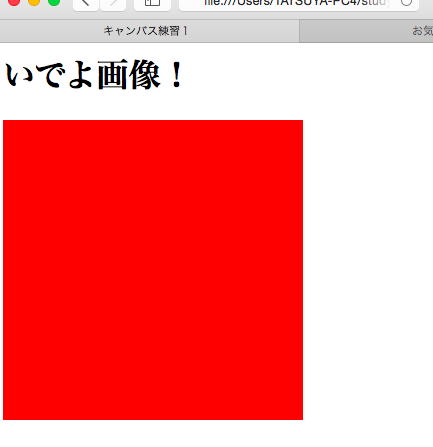

Canvasを使ってみる(鬼基本、四角描画)
仕事先でもたま〜に耳にする「canvas」。
JavaScriptベースで図を描くことが出来る、html5の描画機能のことらしい。Javascriptをポチポチやっている者として、少し弄ってみるのもいいかも。
―――ってことで、書いてみた。
1 | //index.htmml <html lang="ja"> <head> <title>キャンバス練習１</title> <meta charset="utf-8"> <script src="main.js"></script> </head> <body> <h1>いでよ画像！</h1> //ここのcanvasタグで設置。 <canvas id="myCanvas" width="300" height="300"></canvas> </body> </html> |
1 | //main.js //canvasタグ内のidに対応させて、 var cnvs = document.getElementById("myCanvas"); //getContextで準備完了。 var cntxt = cnvs.getContext('2d'); //canvasタグ内の縦横を吸って var w = cnvs.width; var h = cnvs.height; // cntxt.fillStyle = "#ff0000"; cntxt.fillRect(w * 0.1, h * 0.1, w * 0.8, h * 0.8); |
どれどれ・・・・？

ふぉ？！！
全く表示されていない・・・スペルミスもない、はず。
safariでエラーの詳細を見てみると、「TypeError: null is not an object (evaluating ‘cnvs.getContext’)」とのこと。つまり、main.jsの最初で宣言した変数”cnvs”がnullなので、２行目のgetContexrメソッドが使えないそうです。
はて、どういうことだ。canvasタグの要素をしっかり吸えていないということ・・・・？
〜〜〜〜１時間半悩む〜〜〜〜〜
あ、もしや・・・・。

出来た・・・・。どうやらCanvasタグの要素からJavascriptでオブジェクトを作るには、先にタグをブラウザが読み込んでからじゃないと行え見たいらしいです。
（canvasだけじゃない・・・？今の私にはまだ分かりません(白目）)
canvasタグが読み込まれたあとで、JavaScript内のgetElementByIdメソッドを走らせるために、イベントハンドラを使います(さっき名前を覚えた)。
onloadでbody内を読み込み完了してから、そのメソッド内の処理(今回は四角の描写のコード)を行うようにすることで、無事成功しました。
あぁ、超入門でこの調子は、先が思いやられます。